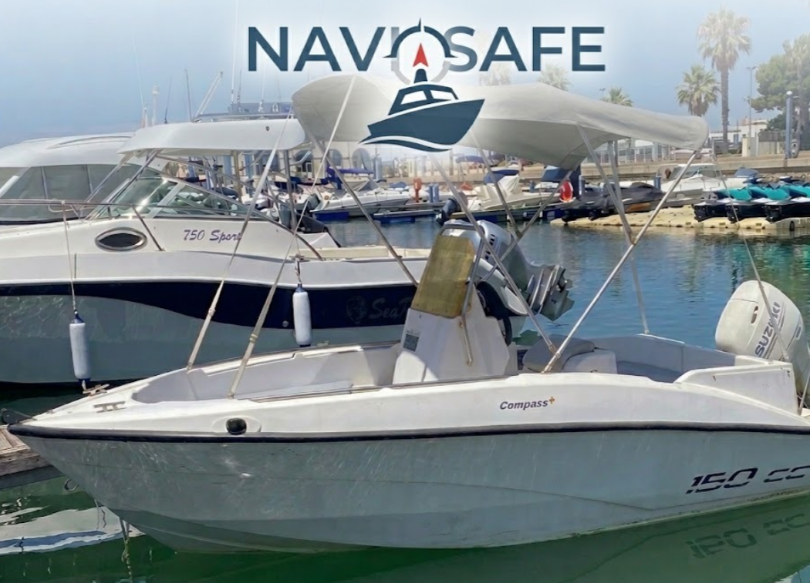

Navisafe és la plataforma de monitoratge marítim que et permet supervisar tots els sensors del teu vaixell en temps real, des de qualsevol dispositiu.

Navisafe integra tots els sensors essencials del teu vaixell en un únic panell de control accessible des del navegador. Sense aplicacions, sense complexitat.
Posició del vaixell actualitzada cada segon amb rastre de la ruta recorreguda. Mapa interactiu amb Leaflet.js.
Monitoratge continu del dipòsit. Alertes automàtiques quan el nivell baixa per sota del 25% i del 10%.
Vigilància de la temperatura en temps real. Alerta crítica per sobre de 105°C per evitar avaries greus.
Sensor crític. Si detecta entrada d'aigua inesperada, el sistema activa l'alarma immediata i envia notificació.
Identifica i mostra tots els vaixells propers detectats per l'AIS. Navega amb total consciència situacional.
Vigilança visual remota del vaixell. Sistema de reconexió automàtica si la càmera perd la senyal.
Detecció d'errors per timeout (2s), avís als 3 errors consecutius i alarma crítica al 4t. Historial complet.
Cada posició GPS i valors de sensors es guarden automàticament. Consulta i visualitza rutes anteriors al mapa.
Test automàtic de tots els sistemes abans de sortir a navegar. Informe clar i en pocs segons.
Un sistema modular basat en ROS2, Python i web. Cada capa té una funció clara i ben definida.
Nodes Python publiquen dades de GPS, combustible, motor, sentina, AIS i càmera cada segon via topics ROS2.
Una API recull els topics ROS2 i els exposa com a JSON a través d'URLs /api/gps, /api/fuel...
El servidor web Apache serveix la interfície. PHP gestiona el login segur amb sessions i la BBDD SQLite.
La pàgina web es refresca cada segon amb dades noves per actualitzar el mapa i la informació en temps real.
Sense compromisos. Comença gratis i amplia quan ho necessitis.
Per a propietaris que volen començar a monitorar el seu vaixell sense cost inicial.
Per a navegants habituals que necessiten control total del seu vaixell.
Per a empreses nàutiques i flotes de vaixells amb necessitats avançades.
"Des que vaig instal·lar Navisafe a la meva embarcació, em sento molt més tranquil quan surto a navegar. Rebo alertes al mòbil i puc veure la temperatura del motor en tot moment."
"El sistema de revisió prèvia m'ha evitat sortir al mar amb el nivell de combustible baix dues vegades. Ara és part del meu ritual abans de navegar."
"Per a la nostra escola nàutica, Navisafe és una eina perfecta. Monitoritzem tota la flota des d'un sol lloc. El pla Professional és molt complet."
Navisafe neix com a projecte final de cicle SMX2 a l'Institut de Palamós. Combina tecnologies reals: ROS2 per a la gestió de sensors, Python Flask per a l'API REST, PHP i SQLite per al backend web, i una interfície moderna amb Leaflet.js. L'objectiu és demostrar que es pot construir un sistema professional de monitoratge marítim amb tecnologia de codi obert.
Miquel Calzada & Guillem Tarradas
Sistemes Microinformàtics i Xarxes · Institut de Palamós · 2026
Accedeix al sistema de monitoratge i comprova en directe com funciona Navisafe amb sensors simulats.
🚀 Accedir al sistema